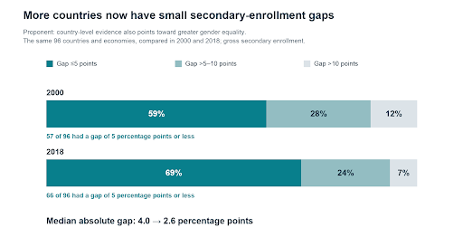
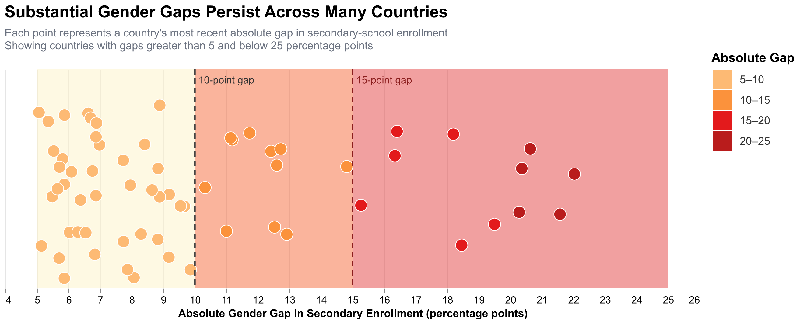

Proposition: The gender gap in secondary-school enrollment has largely closed worldwide.
FOR the Proposition

Design Decisions and Rationale:
- Grouping gap sizes — Score: +1. We grouped countries into three gap ranges to make the pattern easier to see. The small-gap share rose from 59% to 69%, supporting the proposition. However, the five-point cutoff can hide differences within that group. So, showing every country would give more detail but make the chart harder to read.
- Using bars and color — Score: +1.5. We used two equal-length stacked bars to compare the gap categories in 2000 and 2018. Dark teal highlights small gaps and draws attention to progress, while lighter colors describe larger gaps. Separate bars can show each category’s change more clearly but weaken the overall message.
- Highlighting progress with text — Score: +1. The title highlights that more countries have small enrollment gaps. The label shows that this number grew from 57 to 66 countries. The drop in the median gap from 4.0 to 2.6 percentage points adds more support. They all convey the message of greater equality. A neutral title would be less persuasive. However, the chart covers only 96 countries through 2018, so it cannot fully support a claim about the whole world today.
AGAINST the Proposition

Design Decisions and Rationale:
- Data choosing and cutoff — Score: -1 The measurement of the worldwide gender gap in secondary-school enrollment is blurry. The overall mean gap across all countries may be small, so we chose to show individual-country data instead. In fact, most countries have gender gaps within 0–10 percentage points. However, because we wanted readers to notice that there are still many countries with relatively large gaps, we set the graph cutoff at 5 rather than 0 and removed countries with gaps below 5. This makes countries with gaps above 10 appear to occupy a larger share of the visualization than they would if all countries were shown.
- Different color point and dispersion degree — Score: -2 Red and darker colors usually attract more visual attention, so the points become progressively redder and darker as the gender gap increases. In addition, because the y-coordinate does not encode any actual variable, we adjusted the vertical dispersion so that points between 10 and 25 percentage points are more concentrated near the center of the graph. This makes the larger-gap countries easier to notice and visually groups them together, which can make them appear more prevalent than they actually are.
- Reference line and background hint — Score: -1.5 We added reference lines at 10 and 15 percentage points and divided the background into increasingly stronger color regions: pale yellow for 5–10, light orange for 10–15, and light red for 15–25. These visual thresholds encourage readers to interpret gaps above 10, and especially above 15, as increasingly serious even though these cutoff values are design choices rather than universally defined standards. The background shading also creates a visual progression from less concerning to more concerning gaps, which draws more attention toward the right side of the chart.
- Title — Score: -1 The title, “Substantial Gender Gaps Persist Across Many Countries,” states the intended conclusion before readers inspect the individual data points. Instead of using a neutral title such as “Distribution of Gender Gaps in Secondary-School Enrollment,” the wording frames the remaining large gaps as the main takeaway. The subtitle does provide important context about the 5-to-25-point filtering, which makes the framing somewhat more transparent, but the title still encourages readers to focus on persistence and severity rather than on the fact that many countries have relatively small gaps.
Final Reflection
When crafting these two opposing visualizations, it was interesting to discover how information from the same dataset could be interpreted so diversely and manipulated in such a way to explore separate narratives. Performing the straightforward task of simply analyzing the enrollment rates of males and females across each specific country was effective, and likely most people’s first instinct. It was concrete and utilizing a stacked horizontal bar graph told the story very clearly that, from 2000 to 2018, 10% of countries worldwide decreased the enrollment rate difference between men and women to below 5 percentage points. It would seem like this hypothesis was absolute; however, when we began developing a counter to our proposition, we made the difficult realization that we couldn’t just analyze the overall trend of enrollment rates across each country. Instead, we needed to approach our view of the data differently. We then aggregated the data grouping enrollment rates of different global regions to observe an opposing pattern of distinctly different enrollment rates between gender in areas such as North Africa and the Middle East.